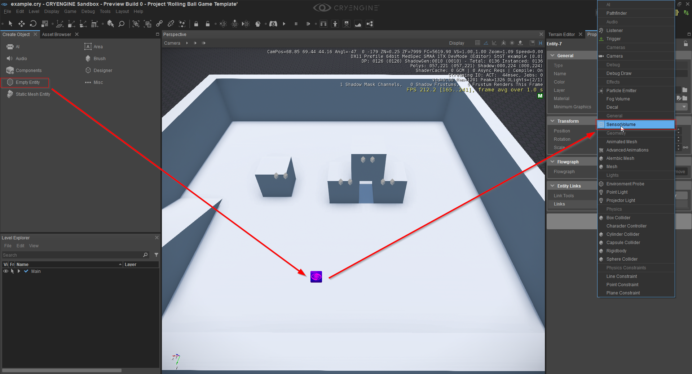
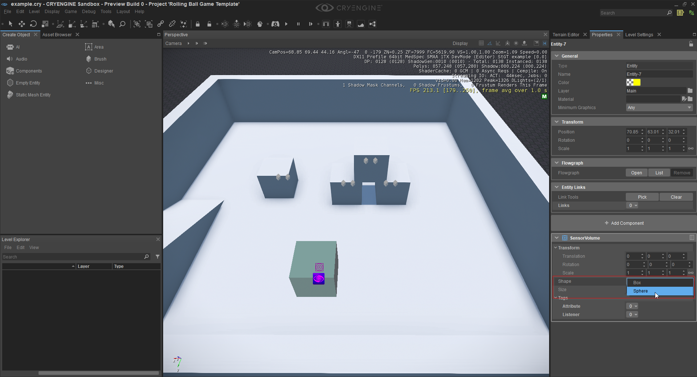
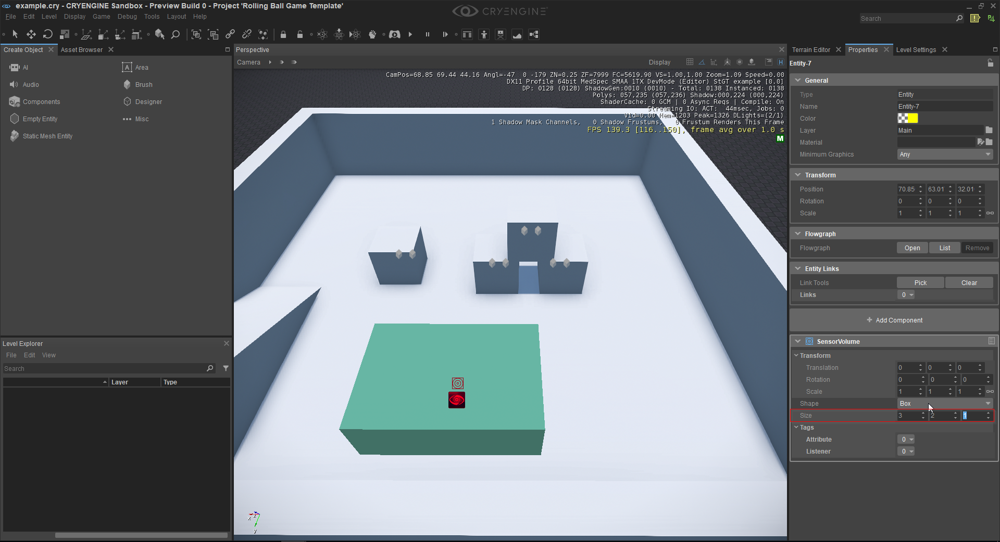
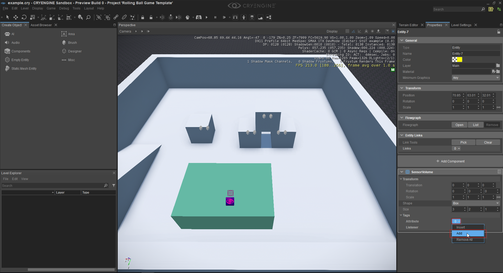
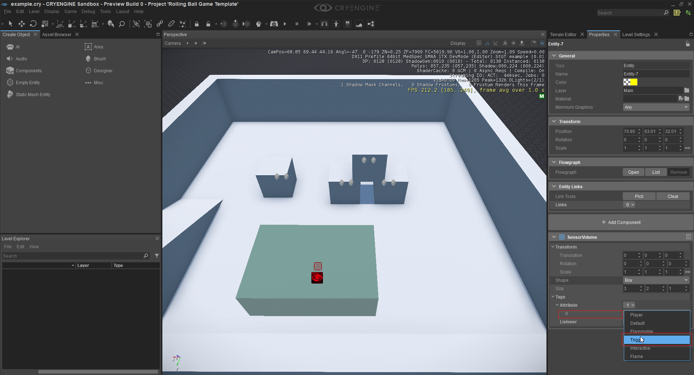

Использование компонента объема датчика
Это руководство поможет вам настроить компонент объема датчика. Объем датчика также может действовать как триггер: всякий раз, когда другой объем датчика достигает или превышает текущий объем датчика, он запускает триггер события. Например, его можно использовать для создания дверного триггера, когда игрок входит в этот сенсорный объем, дверь может открываться или закрываться при контакте. Рекомендуется обратиться к документации «Компоненты сущности — Панель компонентов», чтобы понять или просмотреть поведение конкретных атрибутов.
Использование компонента объема датчика
В этом уроке мы собираемся создать новый объект и добавить к нему объем датчика.
- Откройте уровень в редакторе CRYENGINE и нажмите на значок Пустой объект значок в Создать объект панель для размещения пустого объекта на уровне.
- Выберите объект и нажмите кнопку Добавить компонент кнопка в Свойства панель, а затем выберите SensorVolume вариант.

Теперь вы можете видеть, что компоненту Entity присвоена форма. Эта форма будет действовать как область запуска для этого компонента. Вы можете переключаться между коробкой и сферой, нажимая на значок Форма атрибут, а затем выберите нужную фигуру. Вы также можете изменить размер или радиус фигуры, используя поле атрибута «Размер».


Вам необходимо добавить теги в SensorVolume. Теги — это метки, которые вы можете установить для объема вашего датчика, чтобы назначить дополнительные атрибуты. Например, вы не хотите получать событие каждый раз, когда что-то активирует громкость датчика, возможно, вы просто хотите слушать только отмеченного игрока.
Чтобы добавить Теги к SensorVolume, нажмите на Атрибуты меню, а затем выберите Добавить в контекстном меню. После этого вы сможете увидеть новое поле атрибута. Теперь вы можете выбрать предопределенный тег, который необходимо присвоить этому объему датчика. Вы можете иметь столько тегов, сколько захотите.


Теги работают аналогично Слушатель атрибут. Прослушиватель определяет атрибут, который ему необходимо прослушивать, что означает, что если другой объем датчика с определенным тегом вступит в контакт с текущим объемом датчика, вы получите событие. Например, вы разожгли костер и хотите слушать только легковоспламеняющиеся сущности. У вас может быть несколько прослушивателей или ни одного, если вы не хотите получать какие-либо события.
Вы также можете иметь несколько томов датчиков с разными атрибутами в одном объекте.